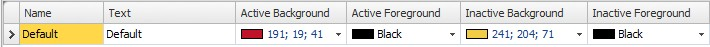
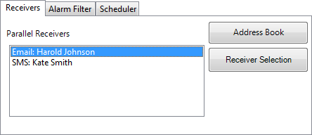

Alarm Management
An alarm is used to call attention to an event that requires immediate action. An alarm is set when a certain condition is met. An alarm condition is designed as a logical evaluation of a tag value. Alarms can be divided into groups to create an order of priority.
Alarm notification can be made in the following ways:
Distribution via SMS, e-mail or printer via the Alarm Distributor |
The alarm server database can be exported in csv format using the Database Export action.
Related information |
|---|
Alarm Conditions
Alarms can assume the following conditions:
Alarm condition | Description |
|---|---|
Active | The alarm condition is met, and the alarm is not acknowledged |
Inactive | The alarm has returned to normal condition, but has not been acknowledged |
Acknowledged | The alarm condition is still met, but the alarm is acknowledged |
Normal | The alarm has returned to normal condition and has been acknowledged |
Alarm Server
The alarm server function is predefined in the Project Explorer. Clicking on it opens the alarm server configuration pages in the desktop.
General alarm server properties are available by clicking the Settings button.
The Properties window is divided into General, Alarm Distribution and Actions.
General Settings
Settings
Some alarm server functions are based on changed tag values:
Alarm function | Description |
|---|---|
Remote acknowledge | Performs remote acknowledge of all current alarms when the tag value is 1 |
Clear alarms | Removes all alarms from the alarm server when the tag value is 1 |
Enable/disable alarms | Enables the alarm server when the tag value is 1 |
Show Alarm Indicator
Select for which alarm statuses the alarm indicator is to be displayed.
Log Settings
Parameter | Description |
|---|---|
Max Number of Logged Rows | The maximum number of alarms to save in the database. If the number of collected items becomes larger than the set value, the oldest item will be deleted. The value must be within the size of the available amount of memory in the HMI panel in runtime. |
Repeat Counter
To avoid that an alarm that is triggered repeatedly results in multiple entries in the alarm list, Repeat Count can be used. The current alarm will then only appear once in the alarm list, and number of times the alarm is triggered will be included in the alarm text. For display in the Alarm Viewer and for logging, select whether to show the time of the first or last occurrence of the alarm.
Alarm Server Events and Actions
Actions can be configured for the entire alarm server. One or multiple actions can be configured when a particular alarm server event occurs.
Select Actions in the Alarm Server properties page to configure actions for the alarm server.
Actions for the following alarm server events can be configured:
Alarm Acknowledge
The specified actions are triggered once for every alarm that is acknowledged.
Alarm Active
The specified actions are triggered once for every alarm that becomes active.
Alarm Deleted
The specified actions are triggered once when the Clear button in the Alarm Viewer is pressed, if at least one alarm is deleted.
Alarm Event Info Requested
The specified actions for the selected alarm are triggered when the Info button in the Alarm Viewer is pressed.
The actions are applied for the individual alarm first. If no action is specified for the alarm, the actions are applied for the group. If no action is specified for the group, the actions are applied for the alarm server.
Alarm Inactive
The specified actions are triggered once for each alarm, for which the alarm condition is no longer met.
Alarm Normal
The specified actions are triggered once for each acknowledged alarm, for which the alarm condition is no longer met.
Active Alarms Deleted
New alarms replace old alarms when the number of logged rows exceeds the maximum value. When this occurs, the "Active alarms deleted" event will be fired, if any of those replaced alarms are active.
Alarms Changed
This event is intended primarily for scripting, in order to avoid performance loss that may occur when many alarms change status at once. Alarms Changed includes status changes based on Alarm Acknowledge, Alarm Active, Alarm Normal and Alarm Inactive, but not Alarm Deleted.
The specified actions are triggered once when the status of several alarms change at one occasion. A collection of alarms is returned.
Alarms Deleted
This event is intended primarily for scripting, in order to avoid performance loss that may occur when many alarms are deleted at once, by pressing the Clear button in the Alarm Viewer.
The specified actions are triggered once whena number of alarms are deleted at one occasion. A collection of alarms is returned.
Any Acknowledged
The specified actions are triggered based on alarm logic: when the alarm server toggles between containing acknowledged alarms or not.
Any Active
The specified actions are triggered based on alarm logic: when the alarm server toggles between containing active alarms or not.
Any Inactive
The specified actions are triggered based on alarm logic: when the alarm server toggles between containing inactive alarms or not.
Alarm Distribution Settings
To enable sending alarms to printer, or via SMS or e-mail, the Alarm Distributor is used. In addition to the settings below, the Enable Distribution option for the alarm groups or alarm items also has to be checked.
Parameter | Description |
|---|---|
Internal/External | Selection of internal or external alarm distributor |
IP Number Server | The IP address of the external alarm distributor |
Queue Length | The number of alarms to be kept in queue for the external alarm distributor. When the queue is full, no more alarms will be added to the queue. |
Port Number | The port number of the external alarm distributor |
Related information |
|---|
Alarm Indicator
As long as there are active alarms in the alarm server, the alarm indicator notify window will be displayed, regardless of which screen is active. The color shows the current alarm status, and can be configured for each of the alarm groups. The indicator starts in the upper left corner of the screen in runtime, but can be moved to any position on the monitor in runtime.
The appearance of the alarm indicator depends on the current alarm status. It will show the most severe status of the alarms in the list. The Alarm Indicator disappears when all alarms have been acknowledged, and all alarms have returned to inactive status.
Select General settings in alarm server properties page to decide for which alarm statuses to show the alarm indicator.
Alarm condition | Description | Default alarm indication |
|---|---|---|
Active | The alarm condition is met, and the alarm is not acknowledged | Flashing red |
Inactive | The alarm has returned to normal condition, but has not been acknowledged | Flashing green |
Alarm condition | Description | Default alarm indication |
|---|---|---|
Acknowledged | The alarm condition is met, and the alarm is acknowledged | Flashing green |
Normal | The alarm has returned to normal condition, and has been acknowledged | - |
Related information |
|---|
Alarm Items
Alarm items are added from the Alarm Items tab of the alarm server configuration pages.
Click Add to define a new alarm.
Parameter | Description |
|---|---|
Name | Symbolic name for the alarm item that will show in an Alarm Viewer. |
Text | An optional alarm text that will be shown in the Alarm Viewer. Parts of the text can be made dynamic by clicking ... The dynamic text can also be linked to a Text Library. |
Tag | The tag (digital or analog), which generates the alarm when it assumes the specified status. |
Expression | See section Expressions |
Condition | Equal to/Not equal to: The alarm is set when the value of the tag is equal/not equal to the value specified in the Trigger Value field. Greater than/Less than: The alarm is set when the value of the tag is greater/less than the value specified in the Trigger Value field. Equal to greater than/Equal to less than: The alarm is set when the value of the tag is equal to or greater/less than the value specified in the Trigger Value field. Rising/Falling Edge: The alarm is set when the specified tag goes to one/zero. |
Parameter | Description |
|---|---|
Trigger Value | Numeric value to trigger alarm with when: <tag value> <condition> <trigger value>= true. |
History | Specifies when the alarm is to be removed from the alarm list. Checking this box means that the alarm will remain in the list until the list is full. Leaving it unchecked means that the alarm will be removed from the list when it is acknowledged and no longer active. If Acknowledge Required is not checked, the alarm will be removed from the list as soon as it is no longer active. |
Acknowledge Required | Indicates whether the alarm is to be acknowledged or not. Checking the box means that the alarm must be acknowledged, leaving it unchecked means that the alarm returns to normal directly when the alarm status becomes inactive. |
Remote Acknowledge | A digital tag that acknowledges all the alarm when set to 1 |
Remote Ack Expression | See section Expressions |
Enable Distribution | Enables distribution of the alarm via printer/SMS/e-mail. Only available if alarm distribution is enabled for the alarm server. If the Enable Distribution option for the alarm group is checked, distribution of individual alarms in the group are automatically enabled. |
Repeat Count | To avoid that an alarm that is triggered repeatedly results in multiple entries in the alarm list, Repeat Count can be used. The current alarm will then only appear once in the alarm list, and the number of times the alarm is triggered will be included in the alarm text. It is also possible to show a Count column in the Alarm Viewer. The active time can be shown either for the first time or for the last time the alarm occurred. |
Action | Makes it possible to configure one or multiple actions when a particular alarm event occurs for the current alarm. |
Note
An alarm condition is triggered by a fixed value. The trigger value defined for an analog alarm tag cannot be controlled from a register. It is not supported to trigger alarms on intervals.
Related information |
|---|
Exporting and Importing Alarm Items
Alarm items can be exported and imported using the Import/Export button in the Alarms configuration page. The procedure is similar to exporting and importing tags.
Related information |
|---|
Alarm Groups
Alarms can be divided into groups, for example to indicate the priority of the alarms. One alarm group is defined by default.
Color attributes can be individually set for each alarm group. Alarms can be sorted by group in the Alarm Viewer.
Defining Alarm Groups
Alarm groups are added from the Alarm Groups tab of the alarm server configuration pages.
|  |
Parameter | Description |
|---|---|
Name | An optional name for the alarm group. |
Text | An optional text for the alarm group. |
Colors | Select foreground and background color for each alarm status |
Remote Acknowledge | A digital tag that acknowledges all the alarms in the group when set to 1 |
Remote Ack Expression | See section Expressions |
Enable Distribution | Enables distribution of the alarms in the group via printer/SMS/e-mail. Only available if alarm distribution is enabled for the alarm server. |
Action | Makes it possible to configure one or multiple actions when a particular alarm event occurs for the current alarm group. |
Note
Alarm Filters will revert to default settings if the filtered Alarm Group is renamed.
Related information |
|---|
Actions and Events for Alarm Items and Alarm Groups
Actions can be configured for individual alarms or for alarm groups. One or multiple actions can be configured when a particular alarm event occurs for the current alarm or alarm group.
Actions for individual alarms are configured from the Action column for the alarm on the Alarm Items tab.
Actions for alarm groups are configured from the Action column for the alarm group on the Alarm Groups tab.
Actions and Events
Actions for the following alarm events and alarm group events can be configured:
Alarm Acknowledge
The specified actions will be triggered when the selected alarm/an alarm in the selected alarm group is acknowledged.
Alarm Active
The specified actions will be triggered when the selected alarm/an alarm in the selected alarm group becomes active.
Alarm Event Info Requested
The specified actions are triggered when the Info button in the Alarm Viewer is pressed.
These actions are applied for the individual alarm first. If no action is specified for the alarm, the actions are applied for the group. If no action is specified for the group, the actions are applied for the alarm server.
Alarm Inactive
The specified actions are triggered when the alarm/an alarm in the selected alarm group becomes inactive.
Example
The following picture shows two actions configured for when the current alarm goes active, and another action for when the operator presses the Info button in runtime.
Remote Alarm Server
The alarm server in the iX Developer project can operate as a stand-alone alarm server, processing alarms and showing these in the Alarm Viewer and alarm indicator. Alternatively, the alarm server can distribute alarms to clients. Each alarm server can function as alarm server and/or alarm client. The remote alarm server functionality is set up via properties.
Remote Alarm Server Limitations
Most functions work exactly the same regardless if a local or remote alarm server is used, but there are a few limitations:
In projects where multiple languages are used, switching language in the alarm server results in using the current language for all new alarm texts. Alarms distributed before the language was switched in the server will remain in the previous language in the client.
Pressing the Info button in the Alarm Viewer in runtime does not result in any actions for a remote alarm, unless the same project is used for the server and the client. The script event AlarmInfoRequested can be used instead.
Unless the same project is used for the server and the client, filtering (pressing the Filter button in the alarm viewer) can only be made in runtime for remote alarms, since the remote server may include e.g. alarm groups that are different from the project in which the alarm viewer was configured.
Remote Alarm Server Properties
The following properties, located in the Server Mode group under the Settings button, need to be set up for the remote alarm server:
Property | Description |
|---|---|
Maximum number of alarm events to distribute | The number of events to distribute to the clients. The number of distributed alarms affects performance. |
Server Mode | The alarm server can assume the following modes: Disabled: The alarm server is disabled and no alarms are processed Local: The alarm server processes alarms of its own. Remote: Alarms are distributed to remote clients. Both: The alarm server processes alarms of its own and also distributes them to remote clients |
Server Port | Any available port. The port needs to correspond to the port setting for the remote alarm client. |
Remote Alarm Client
The properties for the remote alarm client are set by adding the Alarm Viewer object, found in the Objects group under the Home tab.
The settings are done in the Property Grid under Extended.
Property | Description |
|---|---|
Server address | The IP address of the remote alarm server. |
Server port | Any available port. The port needs to correspond to the port setting for the remote alarm server. |
Alarm Distributor
The Alarm Distributor makes it possible to send alarm notification via printer, SMS or e-mail. The function can be enabled internally in a project, or in another HMI panel that acts as a server towards several connected clients. Regardless of acting as server or client, distributed alarms are saved temporarily in the local project database to ensure that information is not lost in case of e.g. interrupted power. After receiving alarms from a client, the server will send a confirmation to the client. The alarms will then be removed from the client’s database.
The Alarm Distributor must be created before actions related to it are created.
Alarm Distribution Roles
Using Internal Alarm Distribution Server Functions (Acting as Client and Server)
The following actions are required for using distributed alarm functions in the current project:
Action | Component | Location |
|---|---|---|
Activating distribution of alarms in the project | Alarm Distribution Server | Insert ribbon tab |
Enabling internal distribution of alarms | Alarm Server | Settings button/Alarm Distribution properties |
Action | Component | Location |
|---|---|---|
Enabling distribution of alarm groups or individual alarms | Alarm Server | Alarm Groups or Alarm Items tab |
Configuration of alarm distribution routes | Alarm Distribution Server | Receivers, Alarm Filter and Scheduler tabs |
Configuration of alarm distribution devices | Alarm Distribution Server | Configure Distribution Devices button (e-mail, printer and/or SMS) |
Using External Alarm Distribution Server Functions (Acting as Client)
The following actions are required for using distributed alarm functions in another HMI panel/PC project:
Action | Component | Location |
|---|---|---|
Activating distribution of alarms in the project | Alarm Distribution Server | Insert ribbon tab |
Enabling external distribution of alarms | Alarm Server | Settings button/Alarm Distribution properties |
Enabling distribution of alarm groups or individual alarms | Alarm Server | Alarm Groups or Alarm Items tab |
Collecting Alarms for Distribution (Acting as Server)
The following actions are required for using distributed alarm functions in another HMI panel/PC project:
Action | Component | Location |
|---|---|---|
Activating distribution of alarms in the project | Alarm Distribution Server | Insert ribbon tab |
Configuration of alarm distribution routes | Alarm Distribution Server | Receivers, Alarm Filter and Scheduler tabs |
Configuration of alarm distribution devices | Alarm Distribution Server | Configure Distribution Devices button (e-mail, TCP server, printer and/or SMS) |
Adding an Alarm Distributor
The Alarm Distributor can be added to the project from the Insert ribbon tab. The configuration pages are opened in the desktop area.
Route
A route defines a number of filtering rules for distribution of alarms. Multiple routes makes it possible to send different kinds of notifications to various receivers.
 |
Receivers Tab
The receivers of distributed alarms for each route are set up on the Receivers tab.
Address Book
Click on the Address Book button to enter names, e-mail addresses and/or phone numbers of the persons that are to be available for selection for distributed alarm messages.
 |
The Show Selection/Show All button can be used to set up a filter of displayed items.
The contents of the address book can be exported as a .csv file, and then be imported again after modification using the Import/Export button.
Related information |
|---|
Receiver Selection
Click on the Receiver Selection button to set up receivers of each alarm distribution route; via e-mail, SMS and/or printer.
The selected receivers are displayed under Receivers.
|  |
Alarm Filter Tab
Filtering of each alarm distribution route can be configured on the Alarm Filter tab. The filtering operates using “and” logic, i.e. the alarm will only be distributed
if all conditions are fulfilled. An empty string does not generate a filter condition (acts as a “wild card”).
Parameter | Description |
|---|---|
Alarm Name | The alarm item to distribute. |
Alarm Group | The alarm group of which alarm items are to be distributed. |
Alarm Text | All alarms including this text will be distributed. |
Alarm Status(es) to distribute | Selection of alarm to be distributed, based on alarm status. At least one status must be selected. |
Scheduler Tab
Scheduling of each alarm distribution route can be configured on the Scheduler tab. Only alarms that occur between the start and stop times will be distributed.
Parameter | Description |
|---|---|
Period | Select daily or weekly alarm distribution |
Day | Select weekday, if Weekly was selected for Period |
Start Time/Stop Time | Select start and stop time of the alarm distribution |
Name | The name is automatically filled in based on start and stop time, and cannot be edited |
Configure Distribution Devices
Click the Configure Distribution Devices button to set up the different devices.
Related information |
|---|
Alarm Variables
Variables collected from the alarm server definitions can be included in distributed alarm information. Variables are enclosed by curly brackets; for example “Alarm text: {3}”. The following variables can be used:
Number | Variable | Description |
|---|---|---|
0 | State | The current state of the alarm |
1 | StateTime | The time the alarm entered the current state |
2 | AlarmId | A unique alarm ID |
3 | AlarmText | Alarm item text |
4 | AlarmItemDisplay- Name | Alarm item name |
5 | Count | The number of times the alarm has occurred |
6 | ActiveTime | The time the alarm became active |
7 | InactiveTime | The time the alarm became inactive |
Number | Variable | Description |
|---|---|---|
8 | NormalTime | The time the alarm became normal |
9 | AcknowledgeTime | The time the alarm was acknowledged |
10 | AlarmGroupName | Alarm group name |
11 | AlarmGroupText | Alarm group text |
E-mail Device
Parameter | Description | ||||||||||||||||||||||||||||||||||||||||||||||||
|---|---|---|---|---|---|---|---|---|---|---|---|---|---|---|---|---|---|---|---|---|---|---|---|---|---|---|---|---|---|---|---|---|---|---|---|---|---|---|---|---|---|---|---|---|---|---|---|---|---|
From Name | The name of the sender of the e-mail | ||||||||||||||||||||||||||||||||||||||||||||||||
From E-mail Address | The e-mail address of the sender of the e-mail | ||||||||||||||||||||||||||||||||||||||||||||||||
SMTP Server Name/IP | The name or IP address of the SMTP server for sending e-mail | ||||||||||||||||||||||||||||||||||||||||||||||||
Port | The port number of the e-mail server | ||||||||||||||||||||||||||||||||||||||||||||||||
Encryption Mode | Select None, ImplicitSSL, or ExplicitSSL | ||||||||||||||||||||||||||||||||||||||||||||||||
Advanced Encryption | Clear the check box to use only RSA encryption. Select the check box to use advanced encryption, like DSS, DHE and DH[a]. | ||||||||||||||||||||||||||||||||||||||||||||||||
Code Page | The code page consists ofa table of values that describes the character set for a particular language. The default code page in iX Developer is 65001 (UTF-8). | ||||||||||||||||||||||||||||||||||||||||||||||||
Authentication Mode | Select None or Authenticated Login | ||||||||||||||||||||||||||||||||||||||||||||||||
User Name/Password | User name and password if Authenticated Login was selected | ||||||||||||||||||||||||||||||||||||||||||||||||
Retry Sending | Number of retries if the e-mail cannot be delivered | ||||||||||||||||||||||||||||||||||||||||||||||||
Time Interval | Number of seconds between retries | ||||||||||||||||||||||||||||||||||||||||||||||||
Subject | The e-mail subject; Alarm Variables can be used | ||||||||||||||||||||||||||||||||||||||||||||||||
Body | The e-mail body; Alarm Variables can be used | ||||||||||||||||||||||||||||||||||||||||||||||||
[a] Note that using Advanced Encryption has a negative effect on the performance on CE targets. | |||||||||||||||||||||||||||||||||||||||||||||||||
Printer Device
Parameter | Description |
|---|---|
Buffer settings | Set up the printers buffer settings |
Text Font Size | The font size of the text to be printed |
Body | The body of the printout; Alarm Variables can be used |
Related information |
|---|
SMS Device
To be able to send alarms via SMS, you have to purchase an SMS Gateway Service.
 |
Parameter | Description |
|---|---|
Basic URL for web SMS | The URL configuration string according to the SMS Gateway Service supplier that must include two variables: {0} for telephone number and {1} for SMS body |
Retry Sending | Number of retries if the SMS cannot be delivered |
Time Interval | Number of seconds between retries |
Body | The SMS body; Alarm Variables can be used |
TCP Server
Define the TCP server port. This must correspond to the port defined for the
Alarm Distribution settings for the alarm server.
Alarm Distributor Viewer
The Alarm Distributor Viewer is a debug tool, used for test and verification of the alarm distribution setup.
Clicking the Settings button in runtime makes it possible to edit the address book and make settings for alarm distribution.
Related information |
|---|
Alarm Viewer
The Alarm Viewer can be used to show more detailed alarm information than the alarm indicator. Alarms presented in the Alarm Viewer presents alarm texts from the alarm server. The alarm list shows the latest alarms. It is arranged in alarm group order.
The default design of the alarm viewer depends on the size of the selected HMI panel target, in order to allow full visibility and usability of the alarm viewer in the smaller HMI panels.
The Alarm Viewer can also be shown as a Manage Alarm popup screen.
Settings such as font and button width are available in the Property grid.
The colors of the Alarm Viewer object can be set from the Property grid. The colors of the different alarm statuses are set in the Alarm Server settings.
Note
Some of the color effects require that Vista Style is activated under Extended in the property grid (default setting).
Alarm Viewer PC target
Manage Alarmpopup window
Settings for the Alarm Viewer are available from the General ribbon tab while the object is selected:
Buttons Group
Parameter | Description | ||||||||||||||||||||||||||||||||||||||||||||||||
|---|---|---|---|---|---|---|---|---|---|---|---|---|---|---|---|---|---|---|---|---|---|---|---|---|---|---|---|---|---|---|---|---|---|---|---|---|---|---|---|---|---|---|---|---|---|---|---|---|---|
Position | Controls to which of the borders the buttons will line up | ||||||||||||||||||||||||||||||||||||||||||||||||
Acknowledge Selected | Acknowledges the selected alarm in the Alarm Viewer | ||||||||||||||||||||||||||||||||||||||||||||||||
Acknowledge All | Acknowledges all alarms in all Alarm Viewers | ||||||||||||||||||||||||||||||||||||||||||||||||
Acknowledge Visible | Acknowledges only visible alarms on associated alarm viewer control | ||||||||||||||||||||||||||||||||||||||||||||||||
Clear | Removes all alarms in all Alarm Viewers | ||||||||||||||||||||||||||||||||||||||||||||||||
Clear Visible | Removes only visible alarms on associated alarm viewer control | ||||||||||||||||||||||||||||||||||||||||||||||||
Filter[a] | Shows the filter configuration dialog for the selected Alarm Viewer | ||||||||||||||||||||||||||||||||||||||||||||||||
Info | Performs the action set by Alarm Event Info Requested | ||||||||||||||||||||||||||||||||||||||||||||||||
Play/Pause | Starts and pauses the selected Alarm Viewer | ||||||||||||||||||||||||||||||||||||||||||||||||
Enable Context Menu | Shows Alarm Viewer commands in context menu in run- time | ||||||||||||||||||||||||||||||||||||||||||||||||
Enable/Disable Selected Alarm | Toggles the enable status of the selected alarm in the viewer | ||||||||||||||||||||||||||||||||||||||||||||||||
Manage Alarms | Manage enable status of alarms in a popup window | ||||||||||||||||||||||||||||||||||||||||||||||||
[a] Not supported in keyboard operated panels | |||||||||||||||||||||||||||||||||||||||||||||||||
Display Settings Group
Parameter | Description |
|---|---|
Configure Columns | Selection and configuration of columns to display in run- time |
Filter Settings | Filter alarm statuses to display in runtime |
Max Number of Rows | The maximum number of alarms to display. If the number of alarms does not fit in the object in runtime, scroll bars will be made available. If the number of alarms exceeds the maximum number, the oldest item will be deleted. |
Show Column Headers | Shows/hides the alarm viewers column headers |
Show Summary | Shows status information in the bottom of the Alarm Viewer |
Alarm Viewer Commands
In addition to using the Alarm Viewer buttons, the same functions are available using actions.
Related information |
|---|
Alarm Management in Runtime
Alarm notification can be made in the following ways:
Distribution via SMS, e-mail or printer via the Alarm Distributor |
Alarm Acknowledgement
An alarm can be acknowledged in the following ways:
right-clicking on the alarm line and selecting Acknowledge
selecting the alarm line and pressing on the Acknowledge Selected button
pressing the Acknowledge All button to acknowledge all current alarms
pressing the Acknowledge Visible button to acknowledge only visible alarms on associated AlarmViewer control
script actions
Inactive alarms that have been acknowledged can be removed from the list by pressing the Clear button.
Visible inactive alarms that have been acknowledged can be removed from the list by pressing the Clear Visible button.
Sorting
Pressing on the column heading in runtime sorts the alarm list by that column. This pauses the Alarm Viewer.
Filtering
Pressing the Filter button in the Alarm Viewer opens a dialog that allows the user to enter a filtering profile to control which alarms to display in the alarm list. The Filter button, when clicked, only show the panels whose target type matches the projects panel type.
Filtering can be made based on any combination of the following conditions:
Alarm group: The first column in the filter window shows the alarm group name. Check the Enable box to show alarms from the group.
Alarm status: Displays alarms with the status corresponding to the checked status values.
Note
Alarm Filters will revert to default settings if the filtered Alarm Group is renamed.
Play/Pause Button
The Alarm Viewer window can be paused from being updated with incoming alarms using the Play/Pause button. This allows the operator to inspect and sort the list without interference from any incoming alarms. The list also pauses when an alarm is selected.
The alarm list starts updating again when
the Play button is pressed
the operator changes screen and returns to the same screen (or goes to another screen showing the Alarm Viewer)
after a 5 minute time-out
Info Button
Any action in the list can be selected.
 |
This action will be applied for the individual alarm first. If no action is specified for the alarm, the action will be applied for the group. If no action is specified for the group, the action will be applied for the alarm server.
Related information |
|---|
Modifying Alarm Distribution Settings in Runtime
It is possible to configure actions, or to use the Alarm Distribution Viewer to modify the address book and alarm distribution settings in runtime.
Note
If the Alarm Distribution Viewer or alarm distribution actions are used in runtime, it is possible that alarm distribution settings have been modified. Next time you download a project to the HMI panel, you will get a notification, and selection to overwrite panel settings or not.
Related information |
|---|
Address Book Action Groups |
Output Devices Action Groups |
Enable/Disable Selected Alarm
If an alarm for some reason is continuously going on and off, and to avoid that the Alarm Server will be filled with irrelevant alarms, alarms can be disabled (and enabled) in the Alarm Viewer.
When disabled, the alarm is added to the disabled list with a time stamp. The main alarm page shows the number disabled alarms under the list of alarms.
Time stamps of disabled or enabled alarms are persistent for reboots. Disabled alarms at reboot are disabled when restarted, until enabled in the Alarm Viewer again.
Note
Multi-select functionality is only available on PC.
Note
Enable/Disable Alarm functionality is not available during remote Alarm Handling (when a Server address has been assigned).
Manage Alarms
It is possible to manage enable status of alarms in a popup window by enabling the Manage Alarms function.
The scripts/actions are connected to the Alarm Viewer object. The actions are located under the Alarm Viewer.
All relevant properties like font, size, colors are copied from the Alarm Viewer when the Manage Alarms popup is opened. It is not possible to set properties individually for the Manage Alarms screen.
Filter and group functions are available when disabling/enabling alarms. Select and Enable/Disable only affects filtered alarms.
Note
Multi-select functionality is only available on PC.
Note
Manage Alarm functionality is not available during remote Alarm Handling (when a Server address has been assigned).
Example of filtering on“Group 2” in Manage Alarms popupwindow.